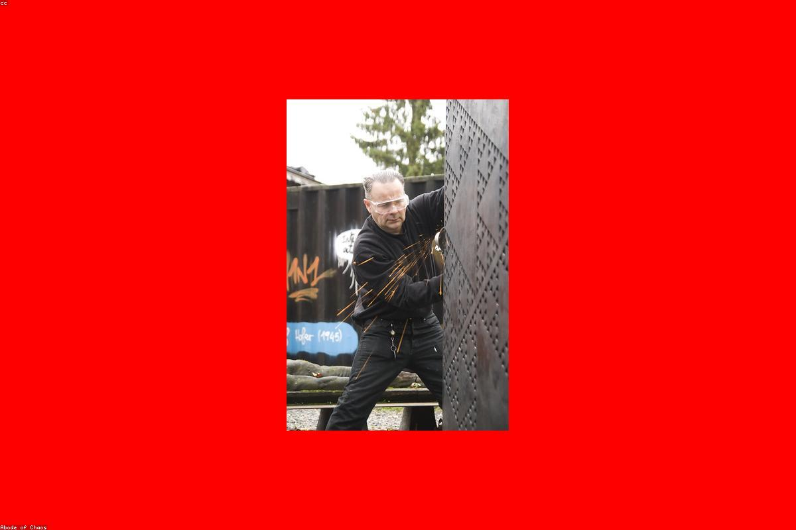
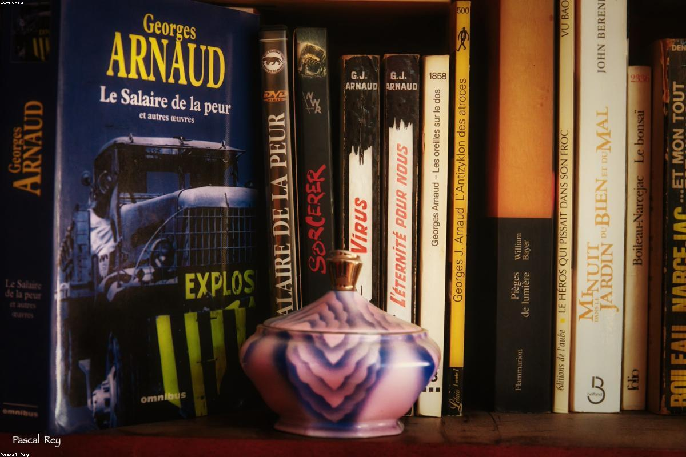

Le materie del quinto anno al Marconi Pieralisi si dividono tra area tecnica e area umanistica. Per ognuna: una descrizione rapida e gli argomenti principali che abbiamo affrontato durante l'anno.
Scientifico-Tecnica
Programmazione, reti, sistemi, matematica e intelligenza artificiale.

Informatica
Sviluppo web full-stack, basi di dati relazionali e progetto reale Scout Admin con Git e lavoro in team.
Approfondisci →
Sistemi e Reti
Reti locali, Internet, sicurezza e crittografia: algoritmi, certificati e protocolli sicuri.
Approfondisci →
TPSIT
Programmazione concorrente in Java: thread, sincronizzazione e problemi classici come produttore-consumatore.
Approfondisci →
GPOI
Gestione dei progetti, Gantt, Scrum, Kanban e documentazione completa del progetto Scout Admin.
Approfondisci →
Matematica
Ragionamento prima del calcolo: la probabilità come modo di pensare, non solo di applicare formule.
Approfondisci →Intelligenza Artificiale
Machine learning, reti neurali e sviluppo concreto di un modello di apprendimento in Python.
Approfondisci →Umanistica
Letteratura, storia, lingua inglese.

Italiano
Letteratura tra Ottocento e Novecento: Pirandello, le maschere e il tema dell'identità che non smetti di portarti dietro.
Approfondisci →Storia
Il Novecento e la Seconda Guerra Mondiale: totalitarismi, responsabilità e la fragilità delle strutture civili.
Approfondisci →
Inglese
Letteratura e Technical English: Oscar Wilde e Il Ritratto di Dorian Gray, un libro che ti aspetti per obbligo e invece ti rimane.
Approfondisci →Altre materie
Scienze motorie e benessere fisico.